Ikebana you can practise with your hands.
SCROLL
A VR sanctuary for ikebana. No controllers, no fresh flowers to buy: you pick, bend and arrange stems with your own hands, and can even draw a flower and watch it grow into 3D.
- Course
- IXDS 712 · SCAD · Spring 2026
- Team
- Yiming Han, Liang Zhou, Minwei Wu
- Built with
- Unity · Meta Quest hand tracking · Meshy AI
- Category
- VR · Interaction design
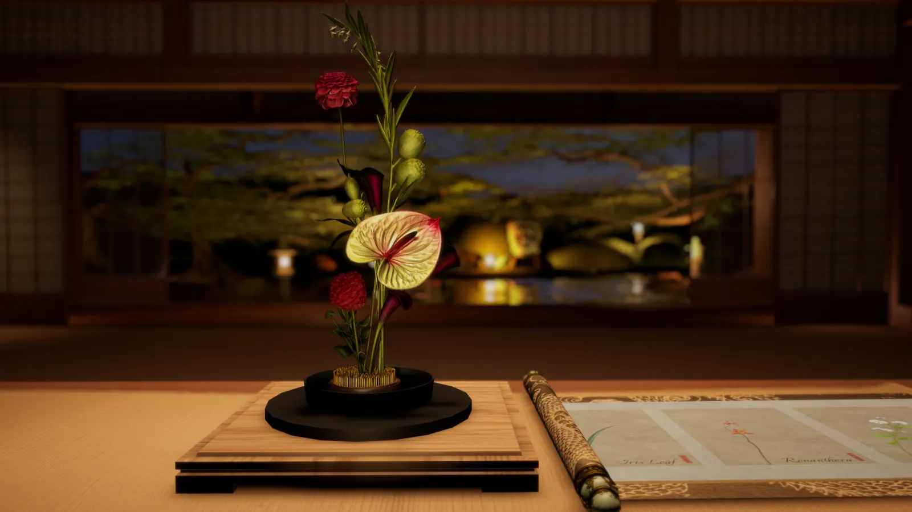
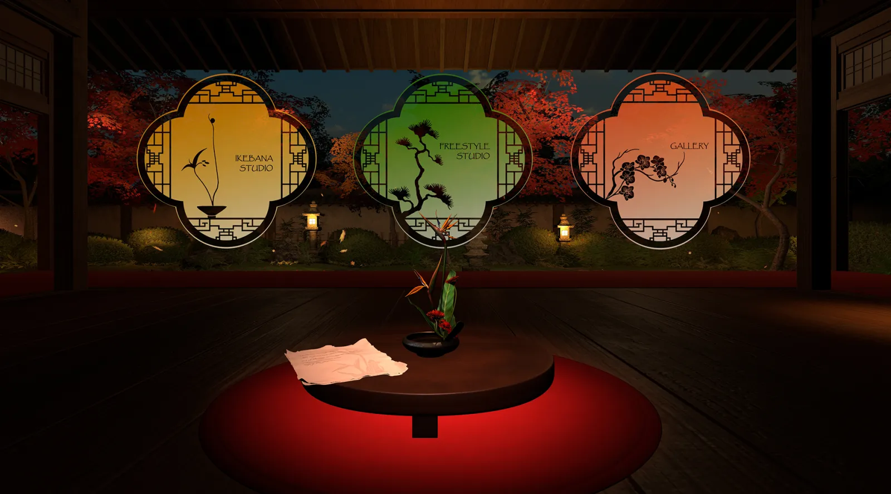
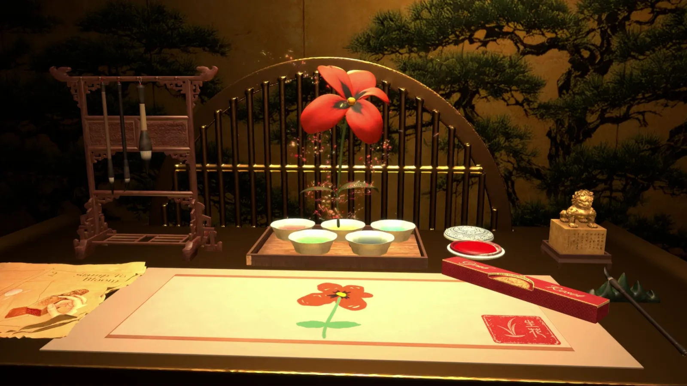
My role
One of three designers taking Zen Bloom from concept to a playable Quest build: the experience flow, the gesture language and the look and feel of the space.
- Experience & interaction design
- Gesture language
- Environment & lighting
- AI flower pipeline
- Vision film
Vision film
Slow down, and arrange something beautiful.
Why ikebana, why VR
More than decoration: a practice of calm.
In East Asian culture, ikebana is an expression of nature, balance and inner cultivation. It values space, restraint and the season, and sits close to meditation and ritual. We wanted to bring that feeling into VR, as a place to slow down and refocus.
- 01
Practise without the cost
Real arranging means buying fresh flowers, tools and vases, again and again. In VR, beginners can practise as often as they like, with no waste.
- 02
Learn in three dimensions
Ikebana is spatial: height, depth, balance and visual weight. Arranging at 1:1 scale with your hands builds that sense far better than a screen.
- 03
A calm place to create
For flower lovers, curious beginners, and anyone who needs a quiet, creative corner of their day.
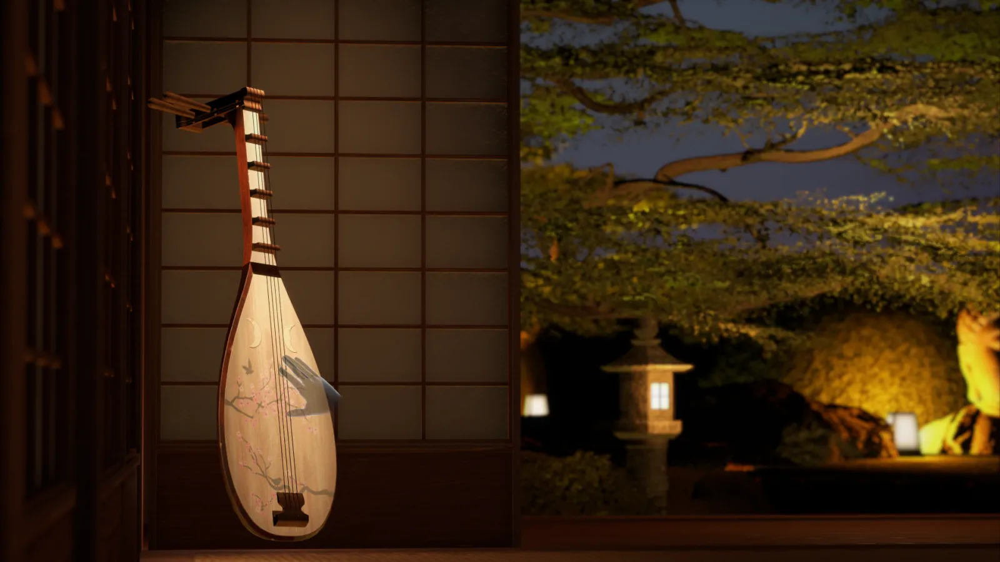
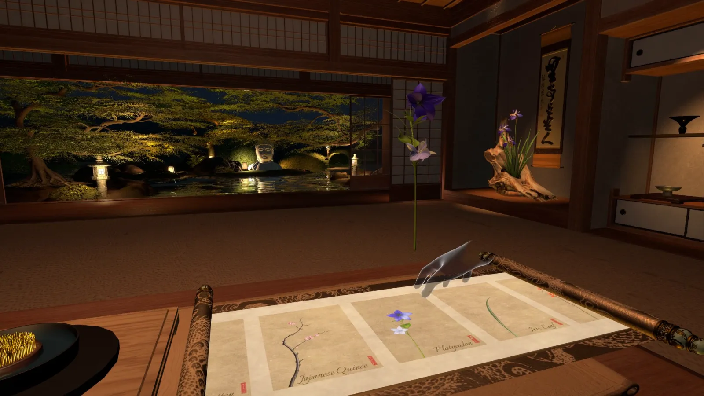
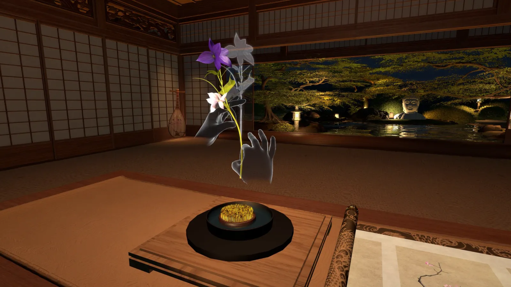
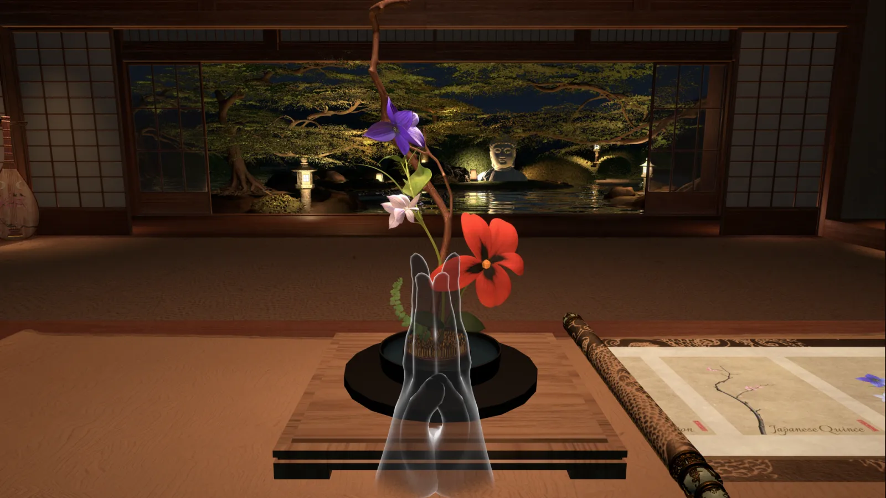
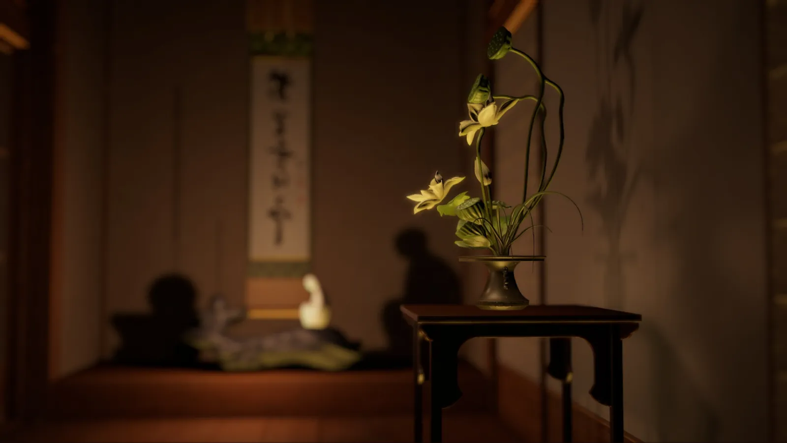
03 The experience
Gaze, then pinch
Face a moon window to select it, then hold a pinch to step through.
Pluck, to Listen
Pluck the pipa to play music. Pluck again to return to silence.
Flowers, Your Choice
Explore different flowers. Select the ones that inspire you.
Bend, Shape, Create
Bend and arrange flowers freely, creating something uniquely yours.
Paint, Seal, Bloom
Paint with ink, press the seal, and AI grows the sketch into a 3D flower.
Palms Together, Saved
Bring your palms together to save your arrangement. It joins your gallery.
Beyond the Bloom
The moment passes. Your creation remains.
Gesture language
Your hands are the controller.
We replaced controllers with a hybrid gesture framework, so every action feels closer to the real ritual. One gesture, one moment.
Gaze + long pinch
Look at a moon window, hold a pinch to step through. Nothing fires by accident.
Tea as a tutorial
Lifting a cup of tea in the lobby teaches you to grab, before you touch a flower.
Pluck the pipa
Music on or off is an instrument in the room, not a menu.
Unroll the scroll
Open the scroll to reveal the flowers, painted in ink.
Pick a flower
Pinch a painted flower and it lifts off the page as a real stem.
Place in the vase
Set the stem into the kenzan at any height and angle.
Bend and shape
Bend stems and branches until the line feels right.
Turn to view
Rotate the stand to see your arrangement from every side.
Draw with ink
Paint your own flower with the brush on the paper.
Stamp to bloom
Press the seal, and AI grows your sketch into a 3D flower.
Palms together
A quiet, familiar gesture saves the arrangement.
Visit the gallery
Your saved work waits in a lantern-lit alcove.
How we built it
Built in Unity, lit like a night garden.
The whole experience runs in Unity with Meta Quest hand tracking. We staged each space, from the lobby’s moon windows to the gallery corridor, and lit them with warm lanterns against the dark garden.
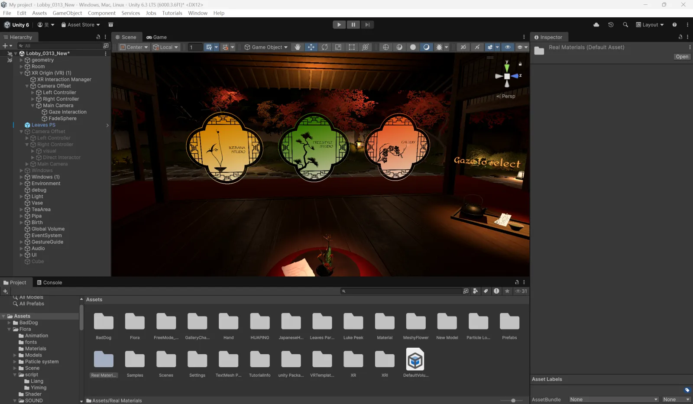
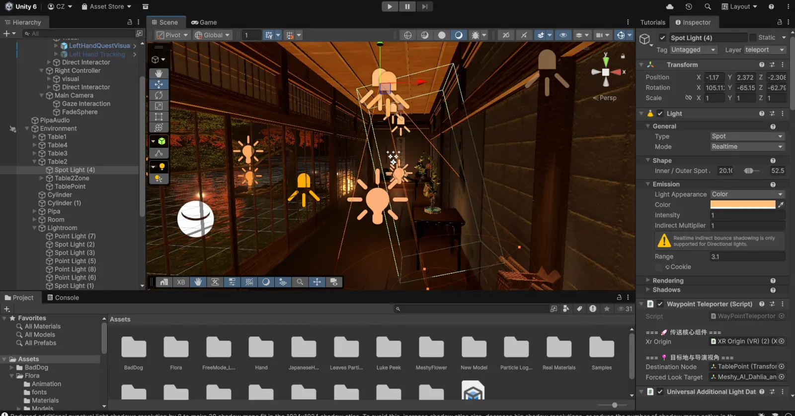
Drawing to bloom: an AI flower pipeline
To fill the studio with flowers, and to power the draw-to-bloom moment, we built an AI-assisted modelling pipeline.
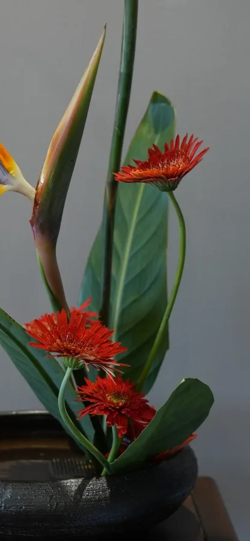
01Inspiration
Mood boards and references set the aesthetic direction.
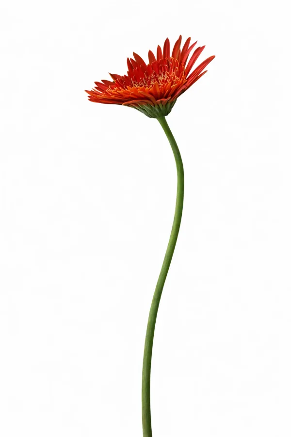
02AI concept
Clean, white-background flower concepts as precise modelling references.
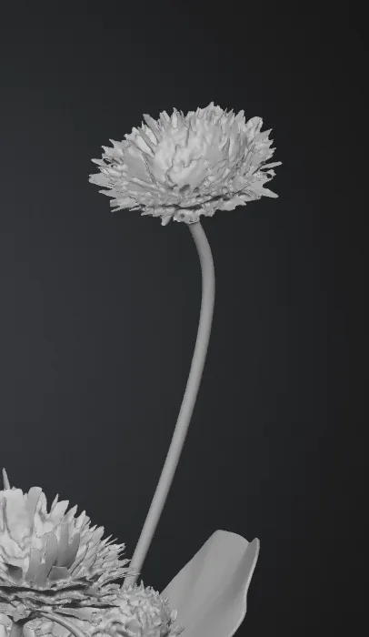
03Rapid prototype
Meshy AI turns the 2D concept into a 3D base mesh in minutes.
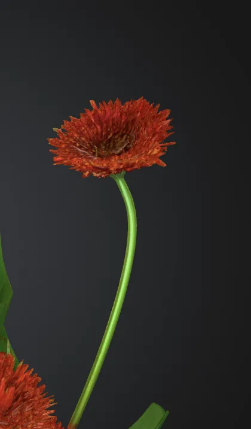
04Refine for Unity
Geometry and textures tuned to run smoothly in VR.
Flower library
Seventeen flowers and branches, ready to arrange.
From bird of paradise to curly willow, each stem is painted on the scroll in ink and marked with a red seal, so choosing a flower feels like browsing an album.
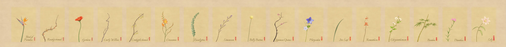
Next project
FINRA
View case study